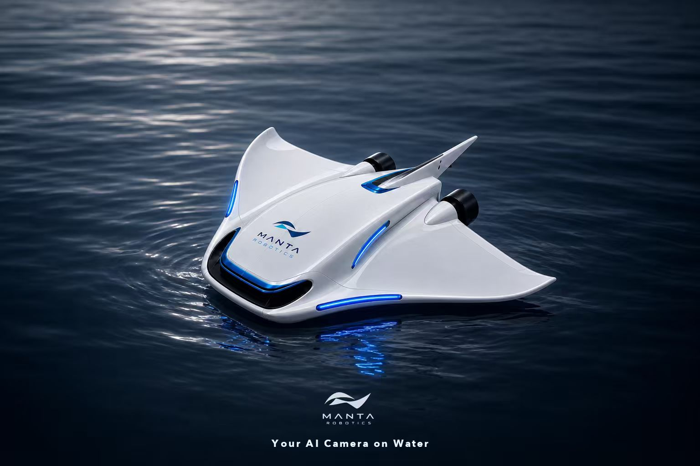

02:471080P
开放水域跟拍 012026.07.09 · 16:19
19.4 MB

自主水面摄影机器人
正在扫描附近的 Manta…
MANTA ROBOTIC · MANTA 2407
校准期间推进输出会被锁定。请把 Manta 放在稳定、无振动的平面上。
开始后，请按照飞控要求逐面放稳并确认。
20260709_161929_h264.mp4
下载完成前请保持 App 在前台并维持与 Manta 的连接。
当前结论是"疑似卡死"，不是硬件确定性判定。建议断电检查机械阻力、供电和串口错误，然后重新执行云台自检。